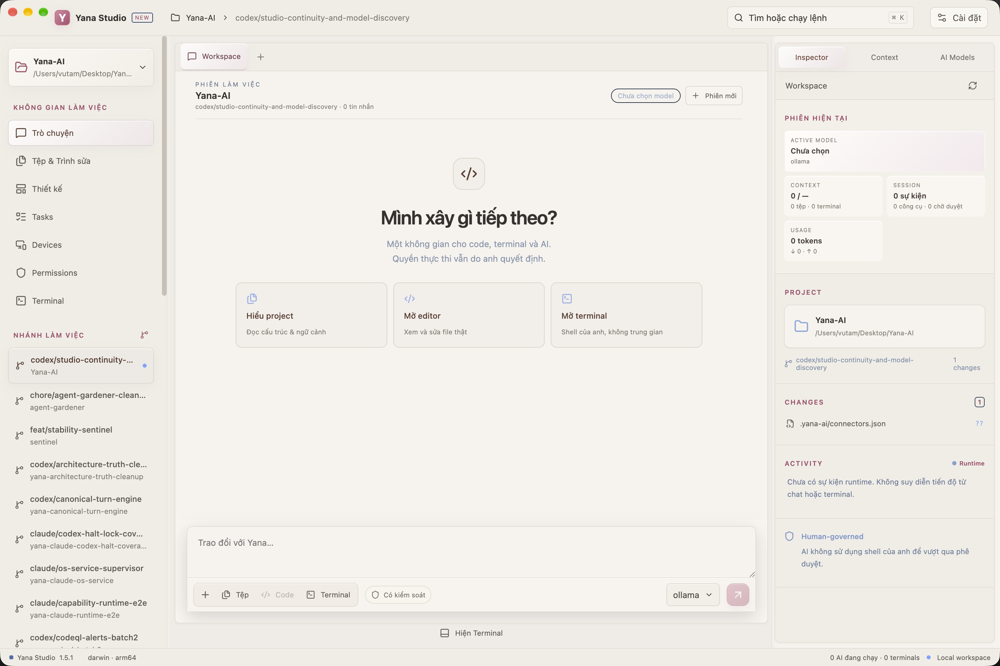
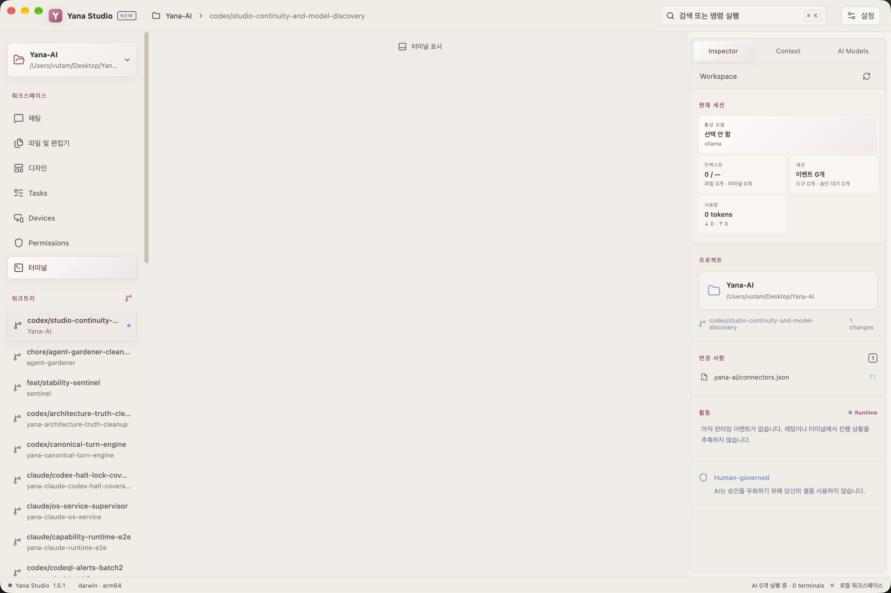

워크스페이스
실제 코드와 터미널
CodeMirror 편집기, 프로젝트 전체 파일 검색, 여러 탭의 PTY, 분할 화면, 검색, 이전 출력 탐색을 제공합니다.
workspace/
├─ app
├─ components
└─ tests
터미널 세션 3개
AI가 일합니다. 결정권은 당신에게 있습니다.
YANA STUDIO 1.5
목표에서 코드, 터미널, 검토, 증거까지 모든 단계를 한 화면에서 볼 수 있습니다. 권한은 채팅창 뒤에 숨지 않습니다.
npm test · 이번만 허용실제 앱 화면
최신 빌드에서 직접 촬영한 화면 두 장이 몇 초마다 전환됩니다.


워크스페이스
CodeMirror 편집기, 프로젝트 전체 파일 검색, 여러 탭의 PTY, 분할 화면, 검색, 이전 출력 탐색을 제공합니다.
workspace/
├─ app
├─ components
└─ tests
터미널 세션 3개맥락
첨부 파일, 프로젝트 기억, Git, 터미널, 토큰 사용량을 숨기지 않고 보여 줍니다.
맥락
파일 3개
터미널 1개
프로젝트 사실 34개
18.2K / 128K검토
변경 사항의 인라인 댓글, 활동 기록, 권한 요청 화면을 확인한 뒤 수락할 수 있습니다.
AI 변경 사항 파일 4개
M App.tsx +42 -13
A Login.tsx +87
[검토] [되돌리기]모델 계층
공식 모델 목록은 클라우드와 로컬 제공자별로 나뉩니다. 화면이 모델 이름을 추측하지 않으며, 모델을 바꿔도 런타임의 권한은 바뀌지 않습니다.
명확한 작업 흐름
Studio는 프로젝트, 모델, 작업, 결정을 하나의 공간에 모읍니다. 각 단계가 어디서 일어나는지 보고 계속 진행할지 결정할 수 있습니다.
컴퓨터의 프로젝트를 선택합니다. Studio는 저장소를 다른 곳으로 복사하지 않고 폴더 위치만 기억합니다.
런타임 목록에서 클라우드 또는 로컬 모델을 찾을 수 있습니다. 모델을 바꿔도 실행 권한은 몰래 바뀌지 않습니다.
같은 워크스페이스에서 Yana와 대화하고 파일을 열고 Git을 확인하며 자신의 터미널을 사용할 수 있습니다.
AI가 관리 대상 기능을 필요로 하면 Studio가 요청을 보여 줍니다. 사용자는 런타임의 경계 안에서 내용을 확인하고 결정합니다.
명확한 권한 경계
사용자는 터미널에서 직접 작업할 수 있습니다. Yana의 행동은 런타임과 기능 제어를 거칩니다. AI의 출력만으로 셸 명령이 실행되지는 않습니다.
Yana의 행동 관리 방식현재 상태
이 페이지는 Studio 개발 빌드의 실제 상태를 설명합니다. 화면에 버튼이 보인다고 기능이 완성된 것으로 간주하지 않습니다.
개발 빌드는 macOS arm64에서 확인했습니다. 모델과 실행 기능은 현재 런타임, 제공자, 설정에 따라 달라집니다.
디자인 캔버스
Canvas는 현재 실험 단계입니다. 목표는 분리된 편집기를 덧붙이는 것이 아니라 디자인 → 코드 → 실행 → 검토의 흐름을 잇는 것입니다.